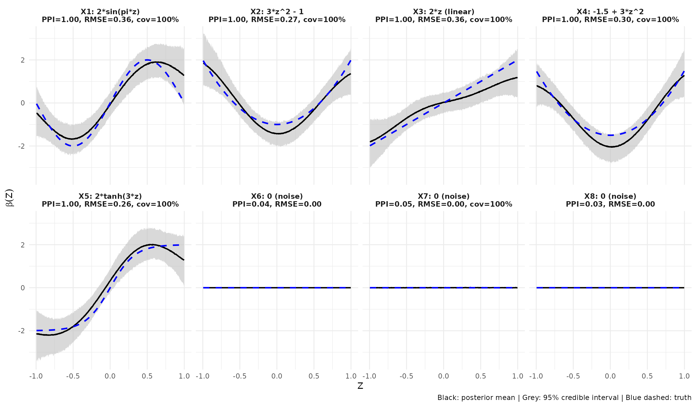

Recovery of varying coefficients
Mauro Florez
2026-05-11
Source:vignettes/recovery-of-varying-effects.Rmd
recovery-of-varying-effects.RmdOverview
This vignette demonstrates the ability of VEL.BMGM to
recover varying-coefficient functions of different functional forms
simultaneously, while excluding noise predictors. We simulate a dataset
with five true predictors whose effects on the response vary nonlinearly
with a single covariate
,
plus three noise predictors with no effect.
Simulation setup
We generate observations with predictors and covariate . The five true coefficient functions are chosen to cover a range of functional forms:
| Predictor | Shape | |
|---|---|---|
| Smooth sinusoid | ||
| Convex (U-shape) | ||
| Linear | ||
| Shifted U-shape | ||
| Sharp sigmoid | ||
| Noise (no effect) |
The binary response is generated from the logistic model
Code
library(VEL.BMGM)
set.seed(123)
n <- 500
p <- 8
K <- 1
X <- matrix(rnorm(n * p), n, p)
Z <- matrix(runif(n, -1, 1), n, K)
z <- Z[, 1]
true_fns <- list(
function(z) 2 * sin(pi * z),
function(z) 3 * z^2 - 1,
function(z) 2 * z,
function(z) -1.5 + 3 * z^2,
function(z) 2 * tanh(3 * z),
function(z) rep(0, length(z)),
function(z) rep(0, length(z)),
function(z) rep(0, length(z))
)
eta <- numeric(n)
for (j in 1:5) eta <- eta + X[, j] * true_fns[[j]](z)
Y <- rbinom(n, 1, plogis(eta))We fit the model with the package defaults (squared exponential
kernel, lengthscale = 0.3), which provide good flexibility
for both smooth and sharp transitions.
The fit takes approximately 15-20 minutes on a modern laptop. To keep this vignette fast to build, we load precomputed results.
results_path <- system.file("extdata", "stress_test_results.RData",
package = "VEL.BMGM")
load(results_path)Selection results
print(metrics_tbl, row.names = FALSE)
#> predictor PPI RMSE Coverage95
#> X1 1.0000 0.357 1
#> X2 1.0000 0.272 1
#> X3 1.0000 0.357 1
#> X4 1.0000 0.304 1
#> X5 1.0000 0.258 1
#> X6 0.0352 0.000 NA
#> X7 0.0520 0.002 1
#> X8 0.0340 0.000 NAAll five true predictors are selected with PPI = 1.00 and all three noise predictors are correctly excluded (PPI < 0.06). RMSE values are between 0.26 and 0.36, and the 95% pointwise credible intervals achieve nominal coverage.
Visualizing recovery
library(ggplot2)
df_all <- do.call(rbind, plot_data)
df_all$panel <- factor(df_all$panel,
levels = unique(df_all$panel[order(df_all$panel_order)]))
ggplot(df_all, aes(x = z)) +
geom_ribbon(aes(ymin = lo, ymax = hi), fill = "grey75", alpha = 0.6) +
geom_line(aes(y = est), color = "black", linewidth = 0.8) +
geom_line(aes(y = truth), color = "blue", linewidth = 0.9, linetype = "dashed") +
facet_wrap(~ panel, ncol = 4, scales = "fixed") +
labs(
x = expression(Z), y = expression(beta(Z)),
caption = "Black: posterior mean | Grey: 95% credible interval | Blue dashed: truth"
) +
theme_minimal(base_size = 11) +
theme(strip.text = element_text(size = 9, face = "bold"))
Each true coefficient function is recovered closely by the posterior mean (black solid line), with the true function (blue dashed) lying within the 95% credible ribbon over the entire range of . The model handles smooth periodic effects (sine, ), polynomial curvature (), purely linear effects (), and sharp transitions (tanh, ) without manual specification of basis functions. The three noise predictors () remain near zero with narrow intervals, confirming that the spike-and-slab prior provides effective sparsity.
Notes
- This example uses balanced effect sizes (each has range approximately ) so that no single predictor dominates the linear predictor. When effects are highly imbalanced, weaker predictors can be missed in favor of stronger ones.
- The choice of
lengthscalecontrols the smoothness assumption. Smaller values allow sharper local variation but increase variance; larger values produce smoother but potentially over-shrunk estimates. The defaultlengthscale = 0.3works well across a wide range of varying-coefficient shapes on covariates rescaled to internally. - See
?bmgm_GPfor full hyperparameter details.